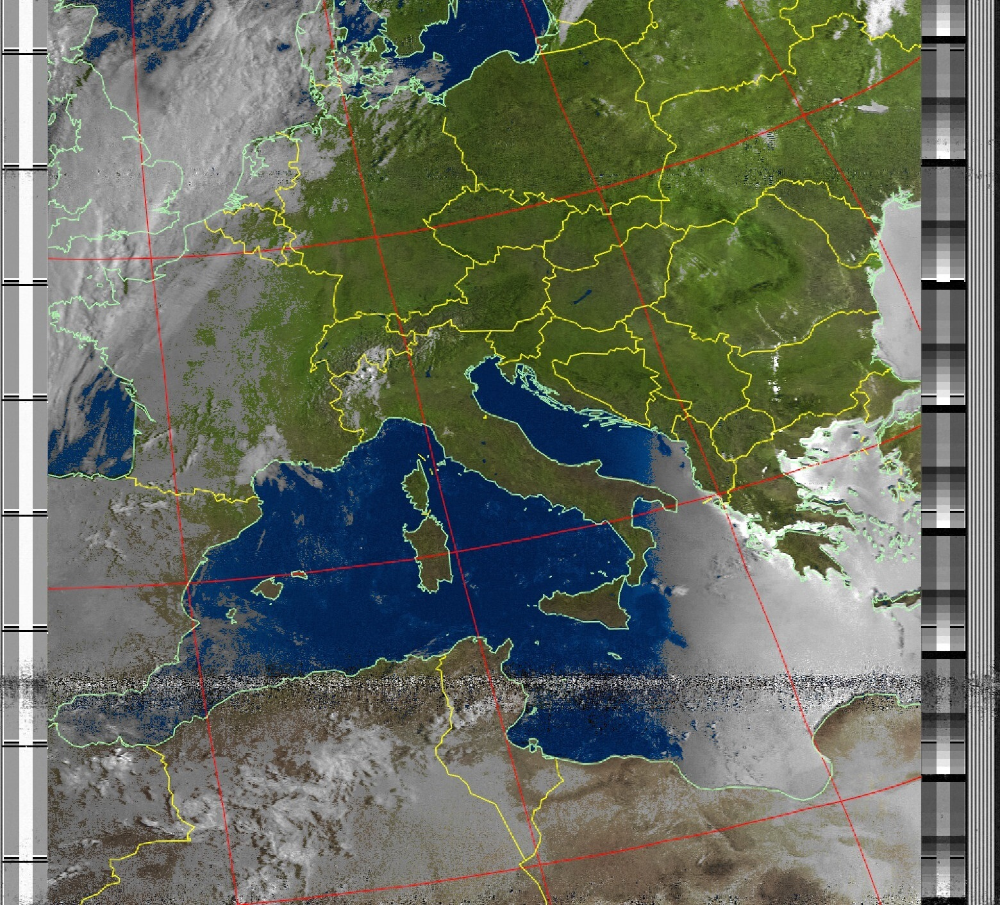

Ricezione di Immagini dai Satelliti NOAA
Benvenuti! Oggi sono entusiasta di condividere un progetto che combina la ricezione di immagini satellitari, un Raspberry Pi e alcuni componenti hardware a basso costo. Questo progetto permette di ricevere immagini direttamente dai satelliti NOAA (National Oceanic and Atmospheric Administration) utilizzando un Raspberry Pi e il software Raspberry-NOAA-v2.
L'Attrezzatura
Per questo progetto, ho utilizzato i seguenti componenti:
Raspberry Pi
(ho usato un Raspberry Pi 4)Dongle RTL-SDR:
Un ricevitore SDR versatile.Filtro FM Nooelec:
Per ripulire i segnali dalle forti stazioni FM locali.Antenna V-Dipole:
Un'antenna semplice ma efficace per ricevere i segnali dai satelliti NOAA.


Il Software: Raspberry-NOAA-v2
Il software chiave di questo progetto è Raspberry-NOAA-v2. Si tratta di una significativa revisione del progetto originale Raspberry-NOAA, che consente di configurare facilmente una stazione a terra per ricevere e decodificare le immagini satellitari NOAA.
Raspberry-NOAA-v2 offre notevoli miglioramenti in termini di usabilità, stile e funzionalità generale. Funziona sia su Raspberry Pi che su normali sistemi a 64 bit basati su Debian, offrendo flessibilità a seconda della configurazione. Il software include anche un pannello web che è compatibile con dispositivi mobili, rendendo facile monitorare e gestire le acquisizioni satellitari.
Puoi trovare il repository di Raspberry-NOAA-v2 qui: Repository Raspberry-NOAA-v2 su GitHub.
Guida Passo-Passo
Ecco come ho configurato il sistema:
Installa Raspberry Pi OS:
Ho iniziato con la versione minima di Raspberry Pi OS (senza ambiente desktop) per mantenere basso l'uso della CPU e della memoria.Installa il Software:
Dopo aver aggiornato il sistema e installato Git, ho clonato il repository Raspberry-NOAA-v2:
Ho modificato il file "settings.yml" per adattarlo alla mia posizione e configurazione, come regolare il guadagno dell'antenna e selezionare le frequenze satellitari corrette.sudo apt update
sudo apt full-upgrade -y
sudo reboot
sudo apt install git -y
cd $HOME
git clone --depth 1 https://github.com/jekhokie/raspberry-noaa-v2.git
cd raspberry-noaa-v2/
nano config/settings.yml
./install_and_upgrade.shConfigurazione dell'Antenna:
L'antenna V-Dipole è stata configurata per ricevere segnali dai satelliti NOAA. Il posizionamento e l'orientamento dell'antenna sono stati fondamentali per garantire una buona ricezione del segnale.Filtro FM:
Ho aggiunto il filtro FM Nooelec tra il dongle RTL-SDR e l'antenna per eliminare le interferenze delle stazioni radio FM locali, che possono essere abbastanza forti da distorcere i segnali satellitari.Acquisizione e Decodifica:
Una volta configurato il sistema, Raspberry-NOAA-v2 ha automaticamente catturato e decodificato i segnali satellitari NOAA durante ogni passaggio. Il software genera immagini dai segnali, che vengono poi visualizzate nel pannello web.
Ricezione delle Immagini e Risultati
Le immagini catturate dai satelliti NOAA offrono dati visivi sorprendenti dallo spazio, inclusi modelli meteorologici e condizioni superficiali. Il software Raspberry-NOAA-v2 supporta sia le immagini satellitari NOAA che Meteor-M 2, fornendo un'ampia gamma di dati satellitari da esplorare.
Perchè Scegliere Raspberry-NOAA-v2?
Raspberry-NOAA-v2 è uno strumento fantastico per gli appassionati di radio che sono interessati ai dati satellitari. Semplifica il processo di configurazione di una stazione a terra e include un'interfaccia web facile da usare per gestire e visualizzare le acquisizioni. Il software è continuamente aggiornato, e la comunità che lo circonda è attiva e di supporto.
Risoluzione dei Problemi e Miglioramenti
Se riscontri problemi come immagini vuote o risultati strani, Raspberry-NOAA-v2 ha un sistema di log integrato per aiutarti nella risoluzione dei problemi. Inoltre, il software consente facili aggiornamenti e modifiche alla configurazione, rendendolo adattabile a diverse configurazioni.
Conclusione
Impostare una stazione di ricezione delle immagini satellitari NOAA con un Raspberry Pi e componenti a basso costo è un progetto gratificante che porta la bellezza dei dati spaziali direttamente a casa tua. Che tu stia catturando modelli meteorologici o esplorando altri dati, questa configurazione offre un modo potente e accessibile per interagire con i segnali satellitari.
Se sei interessato a provare questo progetto, ti consiglio vivamente di immergerti nella comunità di Raspberry-NOAA-v2 e di sperimentare con diverse configurazioni. Puoi trovare il software e tutti i dettagli nel Repository Raspberry-NOAA-v2 su GitHub. Buona caccia ai satelliti!